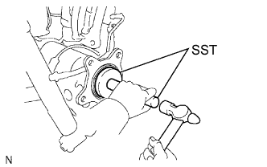
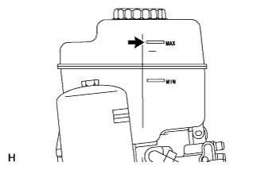
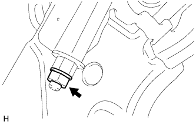
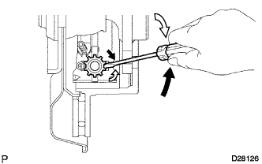
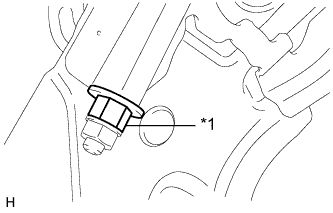
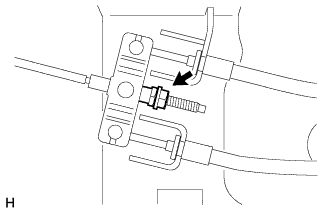

REAR AXLE SHAFT > INSTALLATION |
| 1. INSTALL REAR AXLE SHAFT OIL SEAL LH |
|  |
Using SST and a hammer, install a new axle shaft oil seal.
| 2. INSTALL REAR AXLE SHAFT WITH PARKING BRAKE PLATE LH |
Install a new O-ring to the axle housing.
Install the rear axle shaft with parking brake plate with the 4 nuts.
| 3. INSTALL PARKING BRAKE ASSEMBLY |
Install the parking brake assembly (Click here).
| 4. INSTALL REAR SPEED SENSOR LH |
Install the speed sensor with the nut.
Connect the speed sensor connector.
| 5. INSTALL REAR FLEXIBLE HOSE LH |
Connect the rear flexible hose to the connecting point with the brake tube, and then install a new clip.
Using a union nut wrench, connect the brake tube to the rear flexible hose while holding the rear flexible hose with a wrench.
Install the rear flexible hose and a new gasket to the rear disc brake cylinder with the union bolt.
| 6. FILL RESERVOIR WITH BRAKE FLUID |
| 7. BLEED BRAKE LINE |
Turn the engine switch on (IG).
Remove the brake master cylinder reservoir filler cap assembly.
Add brake fluid until the fluid level is between the MIN and MAX lines of the reservoir.
Repeatedly depress the brake pedal and bleed air from the bleeder plug of the front disc brake cylinder RH.
Repeat the step above until the air is completely bled, and then tighten the bleeder plug while depressing the brake pedal.
Bleed the air from the bleeder plug of the front disc brake cylinder LH using the same procedure as for the RH side.
With the brake pedal depressed, loosen the bleeder plug of the rear disc brake cylinder RH, continue to hold the brake pedal and allow brake fluid to be drained from the bleeder plug while the pump motor operates.
When there is no more air in the brake fluid, tighten the bleeder plug, and then release the brake pedal.
Bleed the air from the bleeder plug of the rear disc brake cylinder LH using the same procedure as for the RH side.
Turn the engine switch off.
Inspect for brake fluid leaks.
Check and adjust the brake fluid level (Click here).
Clear the DTCs (Click here).
| 8. CHECK BRAKE FLUID LEVEL IN RESERVOIR |
|  |
Turn the engine switch off and fully depress the brake pedal 40 times or more to release the pressure in the accumulator.
Adjust the fluid level so that it is at the MAX line.
| 9. INSPECT FOR BRAKE FLUID LEAK |
| 10. INSTALL REAR WHEEL |
| 11. INSPECT PARKING BRAKE PEDAL TRAVEL |
Remove the lower instrument panel finish panel sub-assembly (Click here).
Completely release the parking brake pedal.
|  |
Loosen the lock nut and adjusting nut to completely release the parking brake cable.
Temporarily install the hub nuts to the hub bolts.
|  |
Turn the shoe adjuster so that it expands until the disc locks.
 | Shoe Adjuster Contracts |
 | Shoe Adjuster Expands |
Turn the shoe adjuster so that it contracts until the disc can rotate smoothly.
Check that there is no brake drag against the shoe.
|  |
Turn the adjusting nut until the parking brake pedal travel is corrected to be within the specified range.
| *1 | Adjusting Nut |
Using a wrench or an equivalent tool, hold the adjusting nut and tighten the lock nut.
Operate the parking brake pedal 3 to 4 times and check the parking brake pedal travel.
Check that there is no brake drag against the shoe.
|  |
Additionally, excessive pedal travel can be adjusted on the No. 1 parking brake cable as follows.
Loosen the No. 1 parking brake cable lock nut.
Turn the No. 1 parking brake cable adjustment nut until the parking brake pedal travel is correct.
Tighten the No. 1 parking brake cable lock nut.
Depress and release the parking brake pedal 3 or 4 times. Then check the number of clicks when depressing the pedal.
Remove the hub nuts from the hub bolts.
Install the lower instrument panel finish panel sub-assembly (Click here).
When operating the parking brake lever, check that the brake warning light comes on.
| 12. CHECK SPEED SENSOR SIGNAL |
Check the speed sensor signal (Click here).